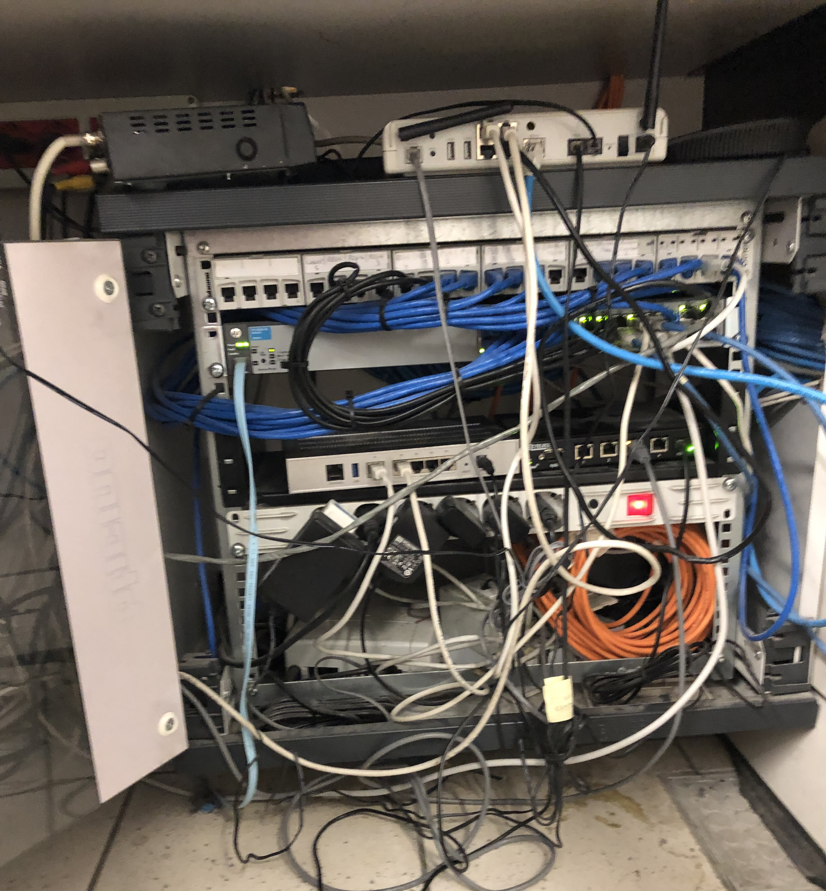
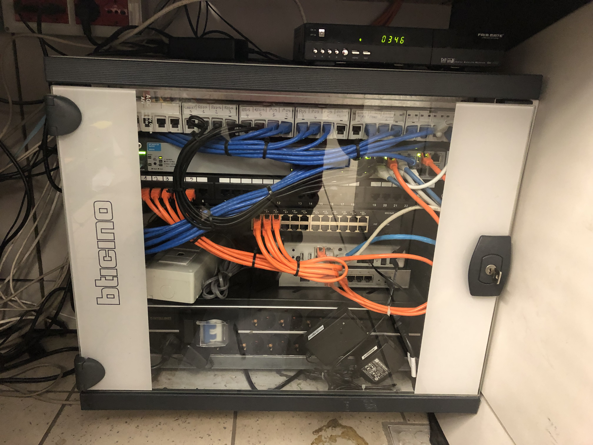
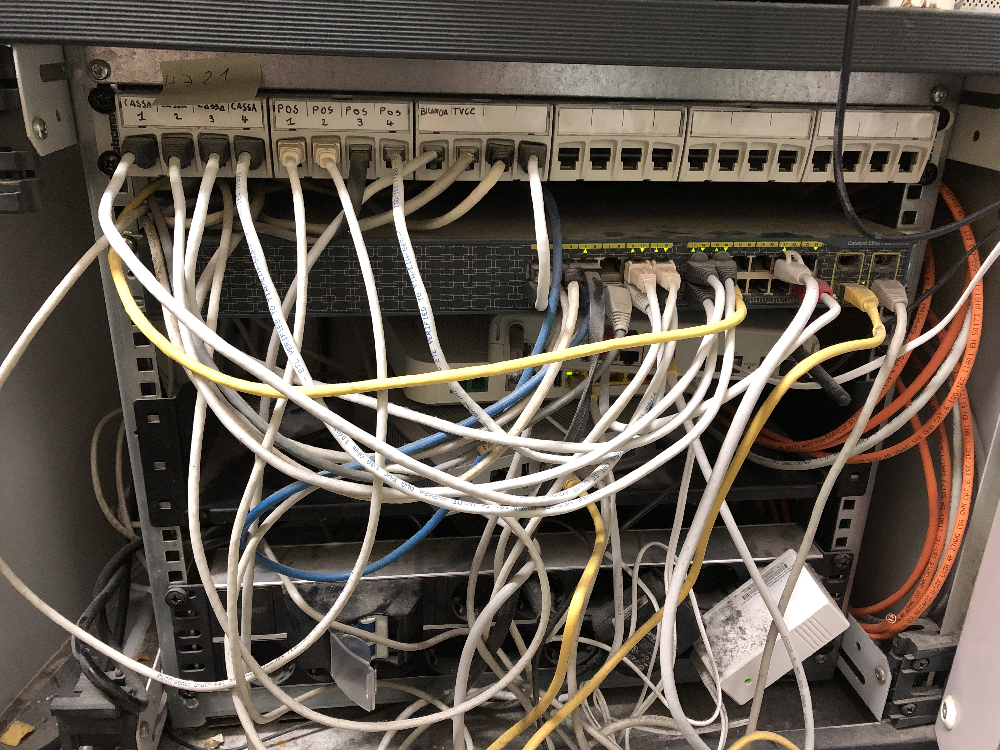
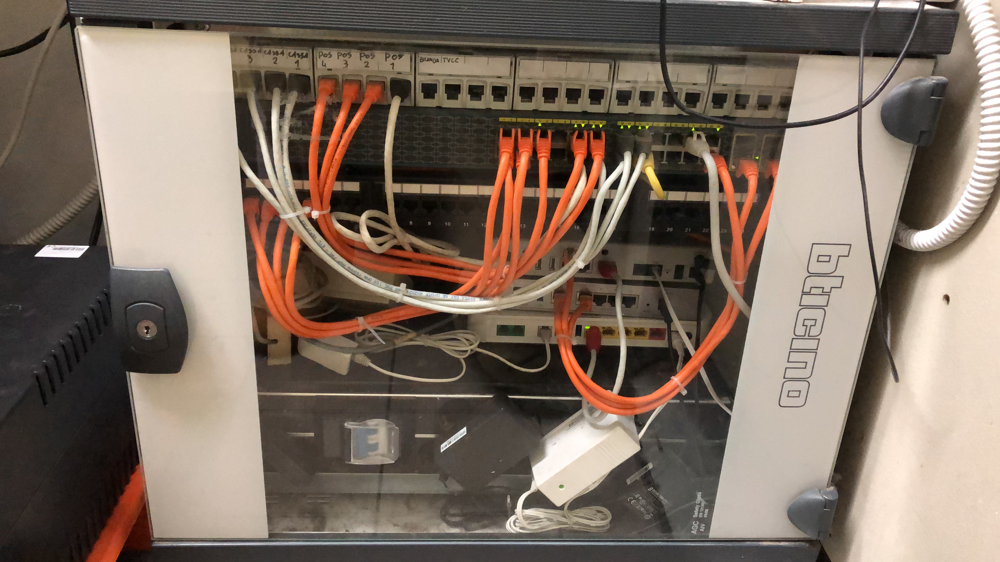

Sono un ragazzo di 21 anni, ho abbandonato gli studi a 16 anni iniziando a lavorare con il consenso dei miei genitori. Ho sempre avuto un'attitudine nel mondo della tecnologia, come probabilmente la maggior parte dei ragazzi della mia generazione.
Lavoro in una media impresa dalla fine del 2015, l'azienda si occupa della gestione di tre discount alimentari Eurospin.
Ho iniziato il mio percorso lavorativo come scaffalista semplice, successivamente sono diventato un addetto al banco gastronomia, dopo qualche mese sono stato promosso a Responsabile di reparto gastronomia ed infine coordinatore del medesimo reparto su due diversi punti vendita.
Ho iniziato ad utilizzare intensamente programmi software comuni come il pacchetto Office e ho migliorato le attitudini relazionali verso clienti e fornitori.
A metà del 2017 per esplicità necessità aziendale mi sono offerto come segretario della direzione generale dove ho curato diversi rapporti sociali con svariati professionisti come consulenti del lavoro, avvocati e commercialisti.
Ho gestito diverse attività all'interno dell'azienda, come: organizzazione di corsi H.A.C.C.P. e D.lgs.81, sistemazione archivi documentali ed altro.
Alla fine anche di questo percorso, ad inizio del 2019 sono diventato responsabile IT aziendale. (Information Technology).
Come appena illustrato, attualmente ricopro il ruolo di CIO (Chief Information Officer) o più semplicemente Responsabile IT.
Per l'azienda ho seguito diversi investimenti tecnologici, molti dei quali da me proposti, successivamente ne illustrerò qualcuno.
Quotidianamente mi occupo di risolvere tutti quei problemi tecnici che bloccano le normali attività operative, tali problematiche possono verificarsi sui pc aziendali e sugli apparati POS.
Mi capita inoltre, in modo non continuativo di dover effettuare dei compiti esterni alla mia mansione attuale, ma inerenti alla mansione precedente di segreteria.
Questi sono alcuni dei progetti che ho proposto, sviluppato e portato a termine in completa autonomia e previa autorizzazione aziendale.
È un programma per l'archiviazione digitale di password, indirizzi e tutte quelle note sensibili e riservate. Possiamo considerarlo un portachiavi digitale.
L'applicazione archivia tutti i dati del propio "portachiavi digitale" sui server di Last Pass. Tali dati vengono salvati cifrandoli in AES a 256bit. I dati vengono decifrati solo ed eslcusivamente a livello locale, tramite l'utilizzo di una password.
Ho registrato tutte le password di svariati siti e applicazioni utilizzate dall'azienda, successivamente ho organizzato gerarchicamente l'accesso alle varie password dai diversi tipi di account ed infine ho configurato svariati criteri di sicurezza.
Mi sono occupato anche della formazione di 8 Persone operanti nell'ufficio all'utilizzo dell'applicazione.
È una serie di programmi offerti da Google per le aziende che consentono di migliorare la produttività aziendale e la ridondanza di dati.
Tutte le varie applicazioni vengono utilizzate tramite il login dell'account Google. Esistono molteplici configurazioni e impostazioni che possono essere modificate dall'admin per consentire specifiche restrizioni.
Ho modificato per la prima volta i record DNS del Server email al fine di reindirizzare tutta la posta elettronica direttamente su Gmail.
Ho configurato molteplici parametri di sicurezza, come la restrizione di applicazioni, specifiche configurazione delle stesse e approvazione di tutti i nuovi dispositivi aziendali, ho anche configurato una specifica impostazione per poter bloccare ed eliminare dai cellulari aziendali i relativi dati.
Ho anche formato 8 persone per l'utilizzo di tutte le applicazioni: Google Drive, Gmail, Google Groups, Google Calendars, etc.
È un'applicazione che permette il controllo da remoto di hosts. Tale applicazione sostituita a Team Viewer consente all'azienda di collegarsi su diversi computer situati in reti esterni direttamente dall'ufficio operativo.
Ho configurato uno specifico parametro che consente di collegarsi da remoto all'host tramite l'applicazione solo da utenti riconosciuti all'interno dell'azienda.
L'implementazione del software è avvenuto nell'arco di qualche giorno, ho spiegato brevemente l'utilizzo del nuovo sistema al personale dedicato.
Tra i vari progetti ho anche effettuato il cablaggio di due piccoli rack situati all'interno dei punti vendita, tale operazione è stata effettuata per il punto vendita di Ponte Galeria la sera, mentre per quello di Ostia in orario di apertura.




Sto progettando una semplice guida in formato .html da inserire all'interno del sito web per permettere a tutti i collaboratori di poter consultare un "Helpme" per sapere dove salvare uno specifico documento elettronico.
Questo progetto seppur può risultare banale, risulta essere invece necessario al fine di raggiungere il mio obiettivo principale: rendere autonomi tutti i collaboratori per le operazioni ripetitive.
Il sito web è stato uno dei primi progetti che ho intrapreso nella mia carriera, il sito web è disponibile al seguente url: https://www.agoraconsulting.eu.
Non è ancora stato completato per svariati motivi che si possono ridurre in una mancanza di priorità all'interno dell'azienda. Ho comunque fissato come "deadline" il 31 Dicembre 2020, entro il quale dovrò necessarimente finire il progetto.
Il progetto in corso è quello di configurare un'area privata per ogni dipendente e collaboratore all'interno del sito internet aziendale. Tale funzione permetterebe di poter caricare sul sito le relative buste paga ed eventuali altre comunicazioni, ho sollevato però due principali criticità.
La prima è quella di comprendere e applicare la normativa vigente in tale ambito.
La seconda è quella di cercare il sistema che offra un buon compromesso tra costo e sicurezza. Ho pensato infatti di escludere svariati plug-in WordPress che offrono la funzionalità di un'area riservata. Tale scelta rimane comunque non defintiva.
Ho intenzione di studiare powertools e metodologie che permettono di testare la sicurezza di un'infrastruttura di dispositivi tecnologici.
Tale scelta nasce per comprendere e risolvere le eventuali vulnerabilità presenti nel sistema informatico dell'azienda per cui lavoro, con il fine ultimo di evitare l'accesso e il potenziali absuso da parte di utenti non autorizzati.
A tal proposito sono necessitato a menzionare il sito Hack The Box, un sito che mette a disposizione delle macchine virtuali con lo scopo di imparare ad analizzare le vulnerabilità di un sistema informatico.